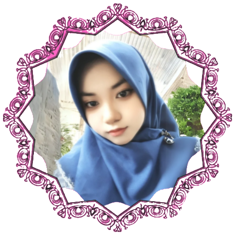

About Me
I am a photography and color editing enthusiast.
I have a deep interest in photography, especially in exploring colors and lighting. For me, every image is a canvas that can be enhanced to create different moods and emotions. I enjoy the process of color editing, experimenting with tones to bring life to an image and strengthen the story behind it. This portfolio is a collection of my explorations in photography and color editing.
More About Me